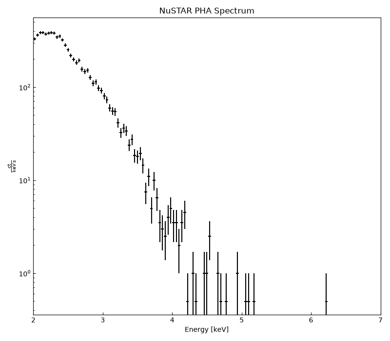
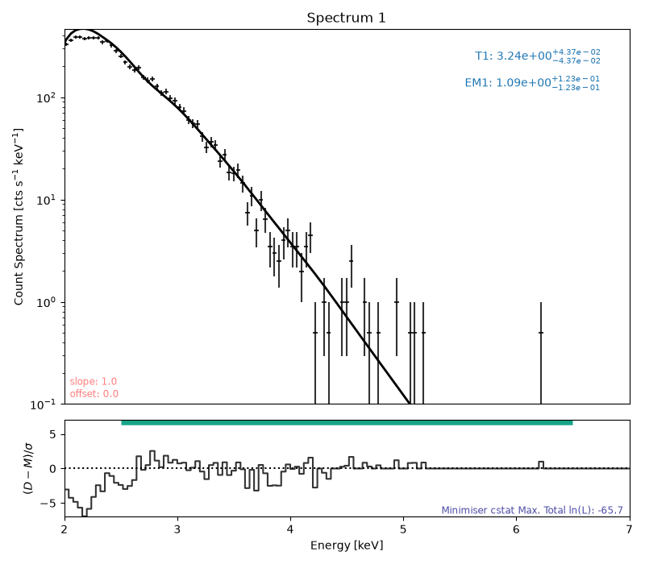
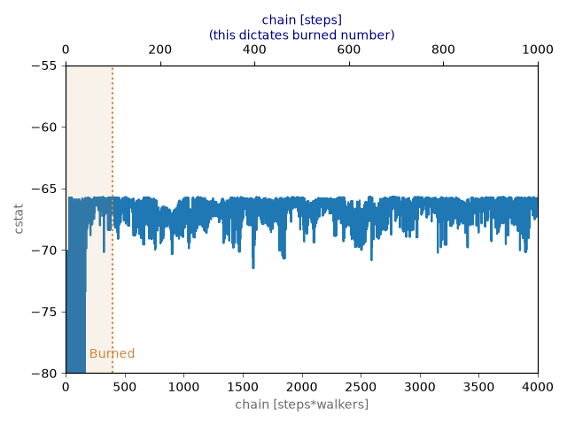
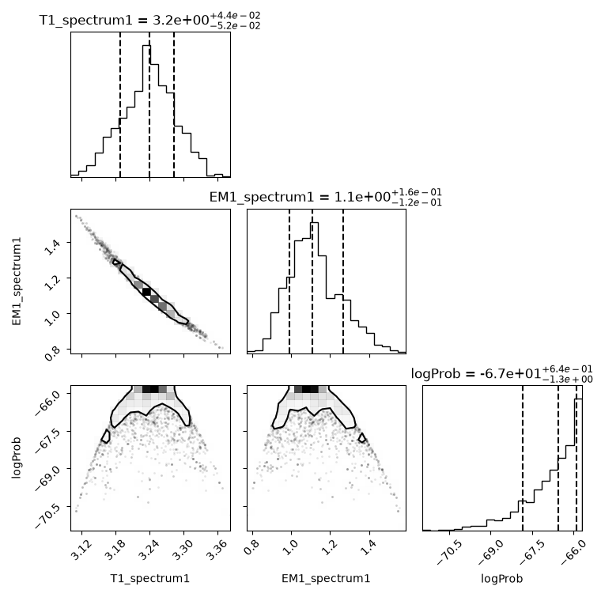
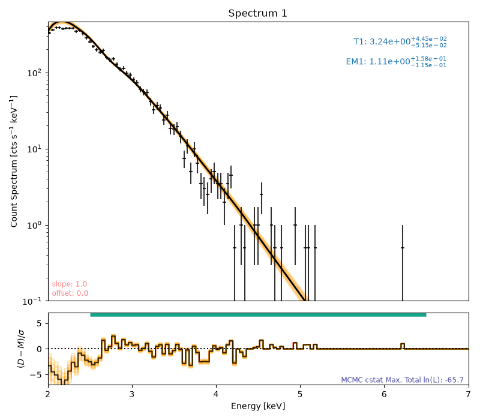

Note
Go to the end to download the full example code.
NuSTAR Spectral Fitting
This example shows the spectral fitting of NuSTAR data.
import ntpath
import os
import urllib.request
import matplotlib.pyplot as plt
import numpy as np
from jdhsrpy import TEST_DATA_LOCATION, spectral_fitting
from jdhsrpy.nustar_spectrum import nustar_pha_spectrum
from jdhsrpy.visualize import spectrum_plot
/home/runner/work/jdhsrpy/jdhsrpy/jdhsrpy/spectral_fitting.py:3: SunpyDeprecationWarning: The legacy module has been deprecated since version 0.4 and will be removed in a future version.
from sunkit_spex.legacy.fitting.fitter import Fitter
Files Downloaded: 0%| | 0/1 [00:00<?, ?file/s]
sunkit_spex.chianti_cont_1_250_v71.sav: 0%| | 0.00/9.88M [00:00<?, ?B/s]
sunkit_spex.chianti_cont_1_250_v71.sav: 0%| | 33.8k/9.88M [00:00<00:36, 272kB/s]
sunkit_spex.chianti_cont_1_250_v71.sav: 3%|▎ | 319k/9.88M [00:00<00:06, 1.57MB/s]
sunkit_spex.chianti_cont_1_250_v71.sav: 11%|█ | 1.09M/9.88M [00:00<00:02, 3.88MB/s]
sunkit_spex.chianti_cont_1_250_v71.sav: 38%|███▊ | 3.76M/9.88M [00:00<00:00, 12.0MB/s]
sunkit_spex.chianti_cont_1_250_v71.sav: 55%|█████▌ | 5.44M/9.88M [00:00<00:00, 13.2MB/s]
sunkit_spex.chianti_cont_1_250_v71.sav: 69%|██████▉ | 6.80M/9.88M [00:00<00:00, 8.46MB/s]
sunkit_spex.chianti_cont_1_250_v71.sav: 80%|███████▉ | 7.87M/9.88M [00:01<00:00, 5.31MB/s]
sunkit_spex.chianti_cont_1_250_v71.sav: 88%|████████▊ | 8.67M/9.88M [00:01<00:00, 5.38MB/s]
sunkit_spex.chianti_cont_1_250_v71.sav: 95%|█████████▌| 9.40M/9.88M [00:01<00:00, 5.71MB/s]
Files Downloaded: 100%|██████████| 1/1 [00:01<00:00, 1.73s/file]
Files Downloaded: 100%|██████████| 1/1 [00:01<00:00, 1.73s/file]
Files Downloaded: 0%| | 0/1 [00:00<?, ?file/s]
sunkit_spex.chianti_lines_1_10_v71.sav: 0%| | 0.00/23.6M [00:00<?, ?B/s]
sunkit_spex.chianti_lines_1_10_v71.sav: 0%| | 1.02k/23.6M [00:00<57:00, 6.91kB/s]
sunkit_spex.chianti_lines_1_10_v71.sav: 0%| | 90.9k/23.6M [00:00<01:07, 346kB/s]
sunkit_spex.chianti_lines_1_10_v71.sav: 4%|▎ | 859k/23.6M [00:00<00:08, 2.59MB/s]
sunkit_spex.chianti_lines_1_10_v71.sav: 9%|▉ | 2.24M/23.6M [00:00<00:03, 5.96MB/s]
sunkit_spex.chianti_lines_1_10_v71.sav: 14%|█▍ | 3.41M/23.6M [00:00<00:02, 7.67MB/s]
sunkit_spex.chianti_lines_1_10_v71.sav: 19%|█▉ | 4.56M/23.6M [00:00<00:02, 8.81MB/s]
sunkit_spex.chianti_lines_1_10_v71.sav: 24%|██▎ | 5.60M/23.6M [00:00<00:01, 9.29MB/s]
sunkit_spex.chianti_lines_1_10_v71.sav: 28%|██▊ | 6.58M/23.6M [00:01<00:02, 6.85MB/s]
sunkit_spex.chianti_lines_1_10_v71.sav: 31%|███▏ | 7.39M/23.6M [00:01<00:02, 5.64MB/s]
sunkit_spex.chianti_lines_1_10_v71.sav: 34%|███▍ | 8.07M/23.6M [00:01<00:03, 4.75MB/s]
sunkit_spex.chianti_lines_1_10_v71.sav: 37%|███▋ | 8.63M/23.6M [00:01<00:03, 4.38MB/s]
sunkit_spex.chianti_lines_1_10_v71.sav: 39%|███▊ | 9.13M/23.6M [00:01<00:03, 3.84MB/s]
sunkit_spex.chianti_lines_1_10_v71.sav: 40%|████ | 9.57M/23.6M [00:01<00:03, 3.77MB/s]
sunkit_spex.chianti_lines_1_10_v71.sav: 43%|████▎ | 10.1M/23.6M [00:02<00:03, 3.92MB/s]
sunkit_spex.chianti_lines_1_10_v71.sav: 45%|████▍ | 10.5M/23.6M [00:02<00:03, 4.11MB/s]
sunkit_spex.chianti_lines_1_10_v71.sav: 46%|████▋ | 11.0M/23.6M [00:02<00:03, 4.21MB/s]
sunkit_spex.chianti_lines_1_10_v71.sav: 48%|████▊ | 11.4M/23.6M [00:02<00:03, 3.71MB/s]
sunkit_spex.chianti_lines_1_10_v71.sav: 50%|█████ | 11.9M/23.6M [00:02<00:03, 3.84MB/s]
sunkit_spex.chianti_lines_1_10_v71.sav: 53%|█████▎ | 12.4M/23.6M [00:02<00:02, 4.02MB/s]
sunkit_spex.chianti_lines_1_10_v71.sav: 54%|█████▍ | 12.8M/23.6M [00:02<00:02, 3.83MB/s]
sunkit_spex.chianti_lines_1_10_v71.sav: 56%|█████▋ | 13.3M/23.6M [00:02<00:02, 3.95MB/s]
sunkit_spex.chianti_lines_1_10_v71.sav: 59%|█████▊ | 13.9M/23.6M [00:03<00:02, 4.35MB/s]
sunkit_spex.chianti_lines_1_10_v71.sav: 61%|██████ | 14.3M/23.6M [00:03<00:03, 2.91MB/s]
sunkit_spex.chianti_lines_1_10_v71.sav: 62%|██████▏ | 14.7M/23.6M [00:03<00:03, 2.77MB/s]
sunkit_spex.chianti_lines_1_10_v71.sav: 64%|██████▎ | 15.1M/23.6M [00:03<00:03, 2.78MB/s]
sunkit_spex.chianti_lines_1_10_v71.sav: 65%|██████▌ | 15.5M/23.6M [00:03<00:02, 2.96MB/s]
sunkit_spex.chianti_lines_1_10_v71.sav: 67%|██████▋ | 15.8M/23.6M [00:03<00:02, 2.99MB/s]
sunkit_spex.chianti_lines_1_10_v71.sav: 68%|██████▊ | 16.1M/23.6M [00:03<00:02, 2.62MB/s]
sunkit_spex.chianti_lines_1_10_v71.sav: 69%|██████▉ | 16.4M/23.6M [00:04<00:02, 2.59MB/s]
sunkit_spex.chianti_lines_1_10_v71.sav: 71%|███████ | 16.8M/23.6M [00:04<00:02, 2.64MB/s]
sunkit_spex.chianti_lines_1_10_v71.sav: 73%|███████▎ | 17.3M/23.6M [00:04<00:02, 2.84MB/s]
sunkit_spex.chianti_lines_1_10_v71.sav: 75%|███████▌ | 17.7M/23.6M [00:04<00:01, 3.19MB/s]
sunkit_spex.chianti_lines_1_10_v71.sav: 77%|███████▋ | 18.2M/23.6M [00:04<00:01, 3.45MB/s]
sunkit_spex.chianti_lines_1_10_v71.sav: 78%|███████▊ | 18.5M/23.6M [00:04<00:01, 3.33MB/s]
sunkit_spex.chianti_lines_1_10_v71.sav: 80%|███████▉ | 18.9M/23.6M [00:04<00:01, 2.82MB/s]
sunkit_spex.chianti_lines_1_10_v71.sav: 81%|████████▏ | 19.2M/23.6M [00:04<00:01, 2.83MB/s]
sunkit_spex.chianti_lines_1_10_v71.sav: 83%|████████▎ | 19.7M/23.6M [00:05<00:01, 3.18MB/s]
sunkit_spex.chianti_lines_1_10_v71.sav: 85%|████████▍ | 20.0M/23.6M [00:05<00:01, 3.03MB/s]
sunkit_spex.chianti_lines_1_10_v71.sav: 86%|████████▌ | 20.3M/23.6M [00:05<00:01, 2.56MB/s]
sunkit_spex.chianti_lines_1_10_v71.sav: 88%|████████▊ | 20.8M/23.6M [00:05<00:00, 2.88MB/s]
sunkit_spex.chianti_lines_1_10_v71.sav: 90%|█████████ | 21.3M/23.6M [00:05<00:00, 3.24MB/s]
sunkit_spex.chianti_lines_1_10_v71.sav: 92%|█████████▏| 21.7M/23.6M [00:05<00:00, 2.89MB/s]
sunkit_spex.chianti_lines_1_10_v71.sav: 93%|█████████▎| 22.0M/23.6M [00:06<00:00, 2.39MB/s]
sunkit_spex.chianti_lines_1_10_v71.sav: 94%|█████████▍| 22.2M/23.6M [00:06<00:00, 2.06MB/s]
sunkit_spex.chianti_lines_1_10_v71.sav: 95%|█████████▍| 22.4M/23.6M [00:06<00:00, 1.85MB/s]
sunkit_spex.chianti_lines_1_10_v71.sav: 96%|█████████▌| 22.6M/23.6M [00:06<00:00, 1.74MB/s]
sunkit_spex.chianti_lines_1_10_v71.sav: 97%|█████████▋| 22.9M/23.6M [00:06<00:00, 1.73MB/s]
sunkit_spex.chianti_lines_1_10_v71.sav: 98%|█████████▊| 23.2M/23.6M [00:06<00:00, 1.70MB/s]
sunkit_spex.chianti_lines_1_10_v71.sav: 99%|█████████▉| 23.4M/23.6M [00:07<00:00, 1.55MB/s]
sunkit_spex.chianti_lines_1_10_v71.sav: 100%|█████████▉| 23.6M/23.6M [00:07<00:00, 1.33MB/s]
Files Downloaded: 100%|██████████| 1/1 [00:07<00:00, 7.47s/file]
Files Downloaded: 100%|██████████| 1/1 [00:07<00:00, 7.47s/file]
Files Downloaded: 0%| | 0/1 [00:00<?, ?file/s]
sunkit_spex.xray_abun_file.genx: 0%| | 0.00/2.03k [00:00<?, ?B/s]
sunkit_spex.xray_abun_file.genx: 20%|██ | 406/2.03k [00:00<00:00, 2.93kB/s]
sunkit_spex.xray_abun_file.genx: 40%|████ | 812/2.03k [00:00<00:00, 3.08kB/s]
sunkit_spex.xray_abun_file.genx: 2.03kB [00:00, 4.50kB/s]
Files Downloaded: 100%|██████████| 1/1 [00:00<00:00, 1.02file/s]
Files Downloaded: 100%|██████████| 1/1 [00:00<00:00, 1.02file/s]
Download the spectral files.
url = f"{TEST_DATA_LOCATION}/test_nustar_data/nu20619003001A06_cl_grade0_sr.pha"
filename_pha = os.path.join(os.getcwd(), ntpath.split(url)[1])
if not os.path.isfile(filename_pha):
urllib.request.urlretrieve(url, filename_pha)
url = f"{TEST_DATA_LOCATION}/test_nustar_data/nu20619003001A06_cl_grade0_sr.arf"
filename_arf = os.path.join(os.getcwd(), ntpath.split(url)[1])
if not os.path.isfile(filename_arf):
urllib.request.urlretrieve(url, filename_arf)
url = f"{TEST_DATA_LOCATION}/test_nustar_data/nu20619003001A06_cl_grade0_sr.rmf"
filename_rmf = os.path.join(os.getcwd(), ntpath.split(url)[1])
if not os.path.isfile(filename_rmf):
urllib.request.urlretrieve(url, filename_rmf)
This example assumes the user has already obtained the PHA, ARF, and RMF files from the NuSTAR data analysis software. See the documentation for more details.
At any point below, a user can swap to only using Sunkit-spex if the helper functions are too cryptic or annoying.
Inspecting the spectrum
It is possible to inspect the spectrum before continuing with the fitting.
This allows a user to get an idea of things like fitting energy ranges and which models to use.
energy_bins, flux, flux_err = nustar_pha_spectrum(filename_pha)
plt.figure(figsize=(8, 7))
spectrum_plot(energy_bins, flux, flux_err)
plt.xlim([2, 7])
plt.title("NuSTAR PHA Spectrum")
plt.tight_layout()
plt.show()

Let’s make sure the same random processing occur each time this is run so we’ll set the random seed for Numpy
np.random.seed(42)
Setting up the fitting
We start by loading in the spectral files using sunkit-spex and
the helper functions in jdhsrpy.
This example only shows using one NuSTAR observation and only from
FPMA. To include more, it’s just as simple as passing more files in the
following (e.g. spectral_fitting.get_fitter_object(file1, file2, ...)).
fitter = spectral_fitting.get_fitter_object(filename_pha)
The above is the equivalent of the following when using Sunkit-spex directly.
from sunkit_spex.legacy.fitting.fitter import Fitter
equivalent_fitter = Fitter(
pha_file=[
filename_pha,
]
)
Choosing the fitting range
Choose a fitting range in keV.
The fitting range can be changed at any point. E.g., parameters can be freed or frozen, the fitting range can be changed, then the fit can be run again starting off from where it left off from the previous fit.
fitter.energy_fitting_range = [2.5, 6.5]
Choosing the model
There are a lot of models to choose from but let’s try a single thermal model.
These helper functions are useful as it will check if there are multiple spectra being fitted and then will include a constant factor automatically in the model if that’s the case.
spectral_fitting.set_single_thermal_model(fitter)
print(fitter.params)
Status Value Bounds Error
T1_spectrum1 free 1.0 (0.0, None) (0.0, 0.0)
EM1_spectrum1 free 1.0 (0.0, None) (0.0, 0.0)
Setting up the parameters
For the fitting to start off, we need to provide initial guesses and provide bounds for the fitting parameters.
fitter.params["T1_spectrum1"] = {"Value": 3, "Bounds": (1.1, 4)}
fitter.params["EM1_spectrum1"] = {"Value": 9e-1, "Bounds": (5e-1, 5e0)}
Fitting the data and plotting
The data can now be fitted and plotted.
fitter.fit()
# plot the result
plt.figure(figsize=(8, 7))
axes, res_axes = fitter.plot()
y_max_lim = 1.2 * np.max(fitter.data.loaded_spec_data["spectrum1"]["count_rate"])
axes[0].set_ylim([1e-1, y_max_lim])
axes[0].set_xlim([2, 7])
plt.tight_layout()
plt.show()

MCMC analysis
We can also easily run MCMC analysis.
mcmc_result = fitter.run_mcmc(steps_per_walker=1_000)
fitter.burn_mcmc = 100
0%| | 0/1000 [00:00<?, ?it/s]
0%| | 2/1000 [00:00<00:50, 19.58it/s]
0%| | 4/1000 [00:00<00:50, 19.57it/s]
1%| | 6/1000 [00:00<00:51, 19.47it/s]
1%| | 9/1000 [00:00<00:50, 19.76it/s]
1%| | 12/1000 [00:00<00:49, 19.97it/s]
2%|▏ | 15/1000 [00:00<00:49, 20.10it/s]
2%|▏ | 18/1000 [00:00<00:48, 20.11it/s]
2%|▏ | 21/1000 [00:01<00:47, 20.47it/s]
2%|▏ | 24/1000 [00:01<00:48, 20.27it/s]
3%|▎ | 27/1000 [00:01<00:47, 20.31it/s]
3%|▎ | 30/1000 [00:01<00:47, 20.47it/s]
3%|▎ | 33/1000 [00:01<00:47, 20.35it/s]
4%|▎ | 36/1000 [00:01<00:47, 20.49it/s]
4%|▍ | 39/1000 [00:01<00:46, 20.57it/s]
4%|▍ | 42/1000 [00:02<00:46, 20.58it/s]
4%|▍ | 45/1000 [00:02<00:46, 20.56it/s]
5%|▍ | 48/1000 [00:02<00:46, 20.28it/s]
5%|▌ | 51/1000 [00:02<00:46, 20.24it/s]
5%|▌ | 54/1000 [00:02<00:46, 20.13it/s]
6%|▌ | 57/1000 [00:02<00:46, 20.08it/s]
6%|▌ | 60/1000 [00:02<00:47, 19.96it/s]
6%|▋ | 63/1000 [00:03<00:46, 20.03it/s]
7%|▋ | 66/1000 [00:03<00:46, 20.22it/s]
7%|▋ | 69/1000 [00:03<00:45, 20.51it/s]
7%|▋ | 72/1000 [00:03<00:45, 20.38it/s]
8%|▊ | 75/1000 [00:03<00:45, 20.15it/s]
8%|▊ | 78/1000 [00:03<00:46, 19.98it/s]
8%|▊ | 81/1000 [00:04<00:45, 20.08it/s]
8%|▊ | 84/1000 [00:04<00:46, 19.76it/s]
9%|▊ | 86/1000 [00:04<00:46, 19.79it/s]
9%|▉ | 88/1000 [00:04<00:46, 19.75it/s]
9%|▉ | 90/1000 [00:04<00:46, 19.76it/s]
9%|▉ | 93/1000 [00:04<00:45, 19.85it/s]
10%|▉ | 95/1000 [00:04<00:46, 19.55it/s]
10%|▉ | 97/1000 [00:04<00:46, 19.44it/s]
10%|▉ | 99/1000 [00:04<00:46, 19.49it/s]
10%|█ | 102/1000 [00:05<00:45, 19.67it/s]
10%|█ | 104/1000 [00:05<00:45, 19.56it/s]
11%|█ | 107/1000 [00:05<00:45, 19.82it/s]
11%|█ | 110/1000 [00:05<00:44, 20.05it/s]
11%|█▏ | 113/1000 [00:05<00:43, 20.20it/s]
12%|█▏ | 116/1000 [00:05<00:44, 19.89it/s]
12%|█▏ | 118/1000 [00:05<00:44, 19.71it/s]
12%|█▏ | 120/1000 [00:05<00:45, 19.56it/s]
12%|█▏ | 122/1000 [00:06<00:45, 19.50it/s]
12%|█▏ | 124/1000 [00:06<00:45, 19.28it/s]
13%|█▎ | 126/1000 [00:06<00:45, 19.36it/s]
13%|█▎ | 128/1000 [00:06<00:45, 19.37it/s]
13%|█▎ | 131/1000 [00:06<00:44, 19.67it/s]
13%|█▎ | 133/1000 [00:06<00:43, 19.75it/s]
14%|█▎ | 135/1000 [00:06<00:43, 19.73it/s]
14%|█▎ | 137/1000 [00:06<00:43, 19.74it/s]
14%|█▍ | 139/1000 [00:06<00:43, 19.68it/s]
14%|█▍ | 141/1000 [00:07<00:43, 19.74it/s]
14%|█▍ | 143/1000 [00:07<00:43, 19.64it/s]
14%|█▍ | 145/1000 [00:07<00:43, 19.66it/s]
15%|█▍ | 147/1000 [00:07<00:44, 19.33it/s]
15%|█▍ | 149/1000 [00:07<00:45, 18.87it/s]
15%|█▌ | 151/1000 [00:07<00:44, 18.87it/s]
15%|█▌ | 153/1000 [00:07<00:45, 18.69it/s]
16%|█▌ | 155/1000 [00:07<00:44, 19.02it/s]
16%|█▌ | 157/1000 [00:07<00:43, 19.29it/s]
16%|█▌ | 160/1000 [00:08<00:42, 19.54it/s]
16%|█▌ | 162/1000 [00:08<00:42, 19.66it/s]
16%|█▋ | 164/1000 [00:08<00:42, 19.66it/s]
17%|█▋ | 167/1000 [00:08<00:42, 19.83it/s]
17%|█▋ | 170/1000 [00:08<00:41, 19.86it/s]
17%|█▋ | 173/1000 [00:08<00:41, 19.94it/s]
18%|█▊ | 175/1000 [00:08<00:41, 19.93it/s]
18%|█▊ | 177/1000 [00:08<00:41, 19.82it/s]
18%|█▊ | 179/1000 [00:09<00:41, 19.76it/s]
18%|█▊ | 181/1000 [00:09<00:41, 19.72it/s]
18%|█▊ | 183/1000 [00:09<00:41, 19.50it/s]
18%|█▊ | 185/1000 [00:09<00:41, 19.60it/s]
19%|█▊ | 187/1000 [00:09<00:41, 19.54it/s]
19%|█▉ | 189/1000 [00:09<00:42, 19.30it/s]
19%|█▉ | 191/1000 [00:09<00:42, 19.22it/s]
19%|█▉ | 193/1000 [00:09<00:42, 19.01it/s]
20%|█▉ | 195/1000 [00:09<00:42, 19.00it/s]
20%|█▉ | 197/1000 [00:09<00:42, 19.11it/s]
20%|█▉ | 199/1000 [00:10<00:41, 19.15it/s]
20%|██ | 201/1000 [00:10<00:41, 19.27it/s]
20%|██ | 203/1000 [00:10<00:41, 19.38it/s]
20%|██ | 205/1000 [00:10<00:41, 19.33it/s]
21%|██ | 207/1000 [00:10<00:40, 19.46it/s]
21%|██ | 209/1000 [00:10<00:40, 19.59it/s]
21%|██ | 211/1000 [00:10<00:40, 19.70it/s]
21%|██▏ | 213/1000 [00:10<00:40, 19.54it/s]
22%|██▏ | 215/1000 [00:10<00:40, 19.34it/s]
22%|██▏ | 217/1000 [00:10<00:40, 19.12it/s]
22%|██▏ | 219/1000 [00:11<00:40, 19.26it/s]
22%|██▏ | 221/1000 [00:11<00:40, 19.27it/s]
22%|██▏ | 223/1000 [00:11<00:40, 19.40it/s]
22%|██▎ | 225/1000 [00:11<00:39, 19.47it/s]
23%|██▎ | 227/1000 [00:11<00:39, 19.60it/s]
23%|██▎ | 230/1000 [00:11<00:38, 19.75it/s]
23%|██▎ | 233/1000 [00:11<00:38, 19.93it/s]
24%|██▎ | 236/1000 [00:11<00:38, 19.97it/s]
24%|██▍ | 238/1000 [00:12<00:38, 19.97it/s]
24%|██▍ | 240/1000 [00:12<00:38, 19.83it/s]
24%|██▍ | 242/1000 [00:12<00:38, 19.61it/s]
24%|██▍ | 244/1000 [00:12<00:38, 19.67it/s]
25%|██▍ | 246/1000 [00:12<00:38, 19.74it/s]
25%|██▍ | 249/1000 [00:12<00:37, 20.09it/s]
25%|██▌ | 252/1000 [00:12<00:36, 20.31it/s]
26%|██▌ | 255/1000 [00:12<00:36, 20.32it/s]
26%|██▌ | 258/1000 [00:13<00:36, 20.29it/s]
26%|██▌ | 261/1000 [00:13<00:36, 20.08it/s]
26%|██▋ | 264/1000 [00:13<00:36, 19.89it/s]
27%|██▋ | 266/1000 [00:13<00:37, 19.82it/s]
27%|██▋ | 268/1000 [00:13<00:37, 19.67it/s]
27%|██▋ | 271/1000 [00:13<00:36, 19.82it/s]
27%|██▋ | 274/1000 [00:13<00:36, 19.85it/s]
28%|██▊ | 276/1000 [00:13<00:36, 19.86it/s]
28%|██▊ | 278/1000 [00:14<00:36, 19.65it/s]
28%|██▊ | 280/1000 [00:14<00:36, 19.58it/s]
28%|██▊ | 282/1000 [00:14<00:36, 19.49it/s]
28%|██▊ | 284/1000 [00:14<00:36, 19.49it/s]
29%|██▊ | 286/1000 [00:14<00:36, 19.46it/s]
29%|██▉ | 288/1000 [00:14<00:36, 19.37it/s]
29%|██▉ | 290/1000 [00:14<00:36, 19.42it/s]
29%|██▉ | 292/1000 [00:14<00:36, 19.38it/s]
30%|██▉ | 295/1000 [00:14<00:35, 19.63it/s]
30%|██▉ | 297/1000 [00:15<00:35, 19.69it/s]
30%|██▉ | 299/1000 [00:15<00:35, 19.59it/s]
30%|███ | 301/1000 [00:15<00:35, 19.54it/s]
30%|███ | 303/1000 [00:15<00:35, 19.54it/s]
30%|███ | 305/1000 [00:15<00:35, 19.57it/s]
31%|███ | 307/1000 [00:15<00:35, 19.65it/s]
31%|███ | 309/1000 [00:15<00:35, 19.67it/s]
31%|███ | 311/1000 [00:15<00:35, 19.53it/s]
31%|███▏ | 313/1000 [00:15<00:35, 19.54it/s]
32%|███▏ | 315/1000 [00:15<00:35, 19.45it/s]
32%|███▏ | 317/1000 [00:16<00:35, 19.43it/s]
32%|███▏ | 319/1000 [00:16<00:35, 19.34it/s]
32%|███▏ | 321/1000 [00:16<00:35, 19.35it/s]
32%|███▏ | 323/1000 [00:16<00:34, 19.42it/s]
32%|███▎ | 325/1000 [00:16<00:34, 19.52it/s]
33%|███▎ | 327/1000 [00:16<00:34, 19.56it/s]
33%|███▎ | 329/1000 [00:16<00:34, 19.49it/s]
33%|███▎ | 331/1000 [00:16<00:34, 19.57it/s]
33%|███▎ | 333/1000 [00:16<00:34, 19.59it/s]
34%|███▎ | 335/1000 [00:16<00:34, 19.54it/s]
34%|███▎ | 337/1000 [00:17<00:34, 19.42it/s]
34%|███▍ | 339/1000 [00:17<00:34, 19.41it/s]
34%|███▍ | 341/1000 [00:17<00:34, 19.33it/s]
34%|███▍ | 343/1000 [00:17<00:33, 19.33it/s]
34%|███▍ | 345/1000 [00:17<00:33, 19.36it/s]
35%|███▍ | 347/1000 [00:17<00:33, 19.25it/s]
35%|███▍ | 349/1000 [00:17<00:33, 19.20it/s]
35%|███▌ | 351/1000 [00:17<00:33, 19.29it/s]
35%|███▌ | 353/1000 [00:17<00:33, 19.28it/s]
36%|███▌ | 355/1000 [00:18<00:33, 19.32it/s]
36%|███▌ | 357/1000 [00:18<00:33, 19.26it/s]
36%|███▌ | 359/1000 [00:18<00:33, 19.23it/s]
36%|███▌ | 361/1000 [00:18<00:33, 19.34it/s]
36%|███▋ | 363/1000 [00:18<00:32, 19.39it/s]
36%|███▋ | 365/1000 [00:18<00:32, 19.53it/s]
37%|███▋ | 367/1000 [00:18<00:32, 19.63it/s]
37%|███▋ | 369/1000 [00:18<00:32, 19.56it/s]
37%|███▋ | 371/1000 [00:18<00:32, 19.56it/s]
37%|███▋ | 373/1000 [00:18<00:31, 19.67it/s]
38%|███▊ | 375/1000 [00:19<00:31, 19.65it/s]
38%|███▊ | 377/1000 [00:19<00:31, 19.56it/s]
38%|███▊ | 379/1000 [00:19<00:31, 19.58it/s]
38%|███▊ | 381/1000 [00:19<00:31, 19.49it/s]
38%|███▊ | 383/1000 [00:19<00:31, 19.52it/s]
38%|███▊ | 385/1000 [00:19<00:31, 19.44it/s]
39%|███▊ | 387/1000 [00:19<00:31, 19.52it/s]
39%|███▉ | 389/1000 [00:19<00:31, 19.49it/s]
39%|███▉ | 391/1000 [00:19<00:31, 19.54it/s]
39%|███▉ | 393/1000 [00:19<00:30, 19.59it/s]
40%|███▉ | 395/1000 [00:20<00:31, 19.49it/s]
40%|███▉ | 397/1000 [00:20<00:31, 19.34it/s]
40%|███▉ | 399/1000 [00:20<00:30, 19.40it/s]
40%|████ | 401/1000 [00:20<00:30, 19.39it/s]
40%|████ | 403/1000 [00:20<00:31, 18.97it/s]
40%|████ | 405/1000 [00:20<00:31, 18.83it/s]
41%|████ | 407/1000 [00:20<00:31, 18.93it/s]
41%|████ | 409/1000 [00:20<00:31, 19.01it/s]
41%|████ | 411/1000 [00:20<00:30, 19.17it/s]
41%|████▏ | 413/1000 [00:21<00:30, 19.16it/s]
42%|████▏ | 415/1000 [00:21<00:30, 19.22it/s]
42%|████▏ | 417/1000 [00:21<00:30, 19.18it/s]
42%|████▏ | 419/1000 [00:21<00:30, 19.19it/s]
42%|████▏ | 421/1000 [00:21<00:30, 19.17it/s]
42%|████▏ | 423/1000 [00:21<00:30, 19.03it/s]
42%|████▎ | 425/1000 [00:21<00:30, 18.85it/s]
43%|████▎ | 427/1000 [00:21<00:30, 18.79it/s]
43%|████▎ | 429/1000 [00:21<00:30, 18.74it/s]
43%|████▎ | 431/1000 [00:21<00:30, 18.84it/s]
43%|████▎ | 433/1000 [00:22<00:29, 19.00it/s]
44%|████▎ | 435/1000 [00:22<00:29, 19.17it/s]
44%|████▎ | 437/1000 [00:22<00:29, 19.11it/s]
44%|████▍ | 439/1000 [00:22<00:29, 19.25it/s]
44%|████▍ | 441/1000 [00:22<00:28, 19.35it/s]
44%|████▍ | 443/1000 [00:22<00:28, 19.46it/s]
44%|████▍ | 445/1000 [00:22<00:28, 19.48it/s]
45%|████▍ | 447/1000 [00:22<00:28, 19.39it/s]
45%|████▍ | 449/1000 [00:22<00:28, 19.33it/s]
45%|████▌ | 451/1000 [00:22<00:28, 19.22it/s]
45%|████▌ | 453/1000 [00:23<00:28, 19.07it/s]
46%|████▌ | 455/1000 [00:23<00:28, 19.11it/s]
46%|████▌ | 457/1000 [00:23<00:28, 19.16it/s]
46%|████▌ | 459/1000 [00:23<00:28, 19.30it/s]
46%|████▌ | 461/1000 [00:23<00:27, 19.49it/s]
46%|████▋ | 464/1000 [00:23<00:26, 20.21it/s]
47%|████▋ | 467/1000 [00:23<00:26, 19.89it/s]
47%|████▋ | 469/1000 [00:23<00:26, 19.76it/s]
47%|████▋ | 471/1000 [00:24<00:26, 19.70it/s]
47%|████▋ | 473/1000 [00:24<00:26, 19.66it/s]
48%|████▊ | 475/1000 [00:24<00:26, 19.71it/s]
48%|████▊ | 477/1000 [00:24<00:26, 19.70it/s]
48%|████▊ | 479/1000 [00:24<00:26, 19.74it/s]
48%|████▊ | 481/1000 [00:24<00:26, 19.72it/s]
48%|████▊ | 483/1000 [00:24<00:26, 19.65it/s]
48%|████▊ | 485/1000 [00:24<00:26, 19.62it/s]
49%|████▊ | 487/1000 [00:24<00:26, 19.68it/s]
49%|████▉ | 489/1000 [00:24<00:26, 19.64it/s]
49%|████▉ | 491/1000 [00:25<00:25, 19.68it/s]
49%|████▉ | 493/1000 [00:25<00:25, 19.62it/s]
50%|████▉ | 495/1000 [00:25<00:25, 19.57it/s]
50%|████▉ | 497/1000 [00:25<00:25, 19.53it/s]
50%|████▉ | 499/1000 [00:25<00:25, 19.44it/s]
50%|█████ | 501/1000 [00:25<00:25, 19.37it/s]
50%|█████ | 503/1000 [00:25<00:25, 19.33it/s]
50%|█████ | 505/1000 [00:25<00:25, 19.34it/s]
51%|█████ | 507/1000 [00:25<00:25, 19.42it/s]
51%|█████ | 509/1000 [00:25<00:25, 19.50it/s]
51%|█████ | 511/1000 [00:26<00:25, 19.50it/s]
51%|█████▏ | 513/1000 [00:26<00:25, 19.38it/s]
52%|█████▏ | 515/1000 [00:26<00:25, 19.18it/s]
52%|█████▏ | 517/1000 [00:26<00:25, 19.23it/s]
52%|█████▏ | 519/1000 [00:26<00:25, 19.13it/s]
52%|█████▏ | 521/1000 [00:26<00:25, 19.09it/s]
52%|█████▏ | 523/1000 [00:26<00:24, 19.13it/s]
52%|█████▎ | 525/1000 [00:26<00:24, 19.13it/s]
53%|█████▎ | 527/1000 [00:26<00:24, 19.10it/s]
53%|█████▎ | 529/1000 [00:26<00:24, 19.22it/s]
53%|█████▎ | 531/1000 [00:27<00:24, 19.12it/s]
53%|█████▎ | 533/1000 [00:27<00:24, 18.91it/s]
54%|█████▎ | 535/1000 [00:27<00:24, 18.84it/s]
54%|█████▎ | 537/1000 [00:27<00:24, 18.82it/s]
54%|█████▍ | 539/1000 [00:27<00:24, 18.96it/s]
54%|█████▍ | 541/1000 [00:27<00:23, 19.25it/s]
54%|█████▍ | 543/1000 [00:27<00:23, 19.24it/s]
55%|█████▍ | 545/1000 [00:27<00:23, 19.23it/s]
55%|█████▍ | 547/1000 [00:27<00:23, 19.42it/s]
55%|█████▌ | 550/1000 [00:28<00:23, 19.56it/s]
55%|█████▌ | 552/1000 [00:28<00:23, 19.40it/s]
55%|█████▌ | 554/1000 [00:28<00:23, 19.29it/s]
56%|█████▌ | 556/1000 [00:28<00:23, 19.23it/s]
56%|█████▌ | 558/1000 [00:28<00:22, 19.34it/s]
56%|█████▌ | 560/1000 [00:28<00:22, 19.51it/s]
56%|█████▌ | 562/1000 [00:28<00:22, 19.56it/s]
56%|█████▋ | 564/1000 [00:28<00:22, 19.66it/s]
57%|█████▋ | 566/1000 [00:28<00:22, 19.48it/s]
57%|█████▋ | 568/1000 [00:29<00:22, 19.47it/s]
57%|█████▋ | 570/1000 [00:29<00:21, 19.55it/s]
57%|█████▋ | 572/1000 [00:29<00:21, 19.64it/s]
57%|█████▋ | 574/1000 [00:29<00:21, 19.67it/s]
58%|█████▊ | 577/1000 [00:29<00:21, 19.99it/s]
58%|█████▊ | 579/1000 [00:29<00:22, 18.80it/s]
58%|█████▊ | 581/1000 [00:29<00:22, 18.98it/s]
58%|█████▊ | 583/1000 [00:29<00:21, 19.22it/s]
59%|█████▊ | 586/1000 [00:29<00:21, 19.49it/s]
59%|█████▉ | 588/1000 [00:30<00:20, 19.62it/s]
59%|█████▉ | 590/1000 [00:30<00:20, 19.57it/s]
59%|█████▉ | 592/1000 [00:30<00:20, 19.64it/s]
60%|█████▉ | 595/1000 [00:30<00:20, 19.98it/s]
60%|█████▉ | 598/1000 [00:30<00:20, 20.06it/s]
60%|██████ | 601/1000 [00:30<00:19, 20.15it/s]
60%|██████ | 604/1000 [00:30<00:19, 20.19it/s]
61%|██████ | 607/1000 [00:30<00:19, 20.07it/s]
61%|██████ | 610/1000 [00:31<00:19, 19.91it/s]
61%|██████ | 612/1000 [00:31<00:19, 19.75it/s]
61%|██████▏ | 614/1000 [00:31<00:19, 19.71it/s]
62%|██████▏ | 616/1000 [00:31<00:19, 19.73it/s]
62%|██████▏ | 619/1000 [00:31<00:18, 20.06it/s]
62%|██████▏ | 622/1000 [00:31<00:18, 20.03it/s]
62%|██████▏ | 624/1000 [00:31<00:18, 19.91it/s]
63%|██████▎ | 626/1000 [00:31<00:18, 19.87it/s]
63%|██████▎ | 628/1000 [00:32<00:18, 19.83it/s]
63%|██████▎ | 630/1000 [00:32<00:18, 19.68it/s]
63%|██████▎ | 632/1000 [00:32<00:18, 19.48it/s]
63%|██████▎ | 634/1000 [00:32<00:18, 19.32it/s]
64%|██████▎ | 636/1000 [00:32<00:19, 19.15it/s]
64%|██████▍ | 638/1000 [00:32<00:18, 19.05it/s]
64%|██████▍ | 640/1000 [00:32<00:18, 19.17it/s]
64%|██████▍ | 642/1000 [00:32<00:18, 18.86it/s]
64%|██████▍ | 644/1000 [00:32<00:19, 18.65it/s]
65%|██████▍ | 646/1000 [00:33<00:18, 18.67it/s]
65%|██████▍ | 648/1000 [00:33<00:18, 18.67it/s]
65%|██████▌ | 650/1000 [00:33<00:18, 18.73it/s]
65%|██████▌ | 652/1000 [00:33<00:18, 18.55it/s]
65%|██████▌ | 654/1000 [00:33<00:18, 18.67it/s]
66%|██████▌ | 656/1000 [00:33<00:18, 18.50it/s]
66%|██████▌ | 658/1000 [00:33<00:18, 18.55it/s]
66%|██████▌ | 660/1000 [00:33<00:18, 18.58it/s]
66%|██████▌ | 662/1000 [00:33<00:18, 18.56it/s]
66%|██████▋ | 664/1000 [00:33<00:18, 18.58it/s]
67%|██████▋ | 666/1000 [00:34<00:17, 18.79it/s]
67%|██████▋ | 668/1000 [00:34<00:17, 18.95it/s]
67%|██████▋ | 670/1000 [00:34<00:17, 19.05it/s]
67%|██████▋ | 672/1000 [00:34<00:17, 19.00it/s]
67%|██████▋ | 674/1000 [00:34<00:17, 19.13it/s]
68%|██████▊ | 676/1000 [00:34<00:16, 19.13it/s]
68%|██████▊ | 678/1000 [00:34<00:16, 19.15it/s]
68%|██████▊ | 680/1000 [00:34<00:16, 18.97it/s]
68%|██████▊ | 682/1000 [00:34<00:16, 18.85it/s]
68%|██████▊ | 684/1000 [00:35<00:16, 18.92it/s]
69%|██████▊ | 686/1000 [00:35<00:16, 19.02it/s]
69%|██████▉ | 688/1000 [00:35<00:16, 18.98it/s]
69%|██████▉ | 690/1000 [00:35<00:16, 19.20it/s]
69%|██████▉ | 692/1000 [00:35<00:15, 19.28it/s]
69%|██████▉ | 694/1000 [00:35<00:16, 19.07it/s]
70%|██████▉ | 696/1000 [00:35<00:16, 18.70it/s]
70%|██████▉ | 698/1000 [00:35<00:16, 18.31it/s]
70%|███████ | 700/1000 [00:35<00:16, 18.11it/s]
70%|███████ | 702/1000 [00:35<00:16, 18.42it/s]
70%|███████ | 704/1000 [00:36<00:15, 18.59it/s]
71%|███████ | 706/1000 [00:36<00:15, 18.72it/s]
71%|███████ | 708/1000 [00:36<00:15, 19.05it/s]
71%|███████ | 710/1000 [00:36<00:15, 19.20it/s]
71%|███████ | 712/1000 [00:36<00:14, 19.30it/s]
71%|███████▏ | 714/1000 [00:36<00:14, 19.25it/s]
72%|███████▏ | 716/1000 [00:36<00:14, 19.20it/s]
72%|███████▏ | 718/1000 [00:36<00:14, 19.25it/s]
72%|███████▏ | 720/1000 [00:36<00:14, 19.30it/s]
72%|███████▏ | 722/1000 [00:37<00:14, 19.40it/s]
72%|███████▏ | 724/1000 [00:37<00:14, 19.40it/s]
73%|███████▎ | 726/1000 [00:37<00:14, 19.46it/s]
73%|███████▎ | 728/1000 [00:37<00:14, 19.30it/s]
73%|███████▎ | 730/1000 [00:37<00:14, 19.19it/s]
73%|███████▎ | 733/1000 [00:37<00:13, 19.66it/s]
74%|███████▎ | 736/1000 [00:37<00:13, 19.85it/s]
74%|███████▍ | 738/1000 [00:37<00:13, 19.63it/s]
74%|███████▍ | 740/1000 [00:37<00:13, 19.34it/s]
74%|███████▍ | 742/1000 [00:38<00:13, 19.26it/s]
74%|███████▍ | 744/1000 [00:38<00:13, 19.07it/s]
75%|███████▍ | 746/1000 [00:38<00:13, 18.91it/s]
75%|███████▍ | 748/1000 [00:38<00:13, 18.73it/s]
75%|███████▌ | 750/1000 [00:38<00:13, 18.63it/s]
75%|███████▌ | 752/1000 [00:38<00:13, 18.88it/s]
75%|███████▌ | 754/1000 [00:38<00:12, 19.12it/s]
76%|███████▌ | 756/1000 [00:38<00:12, 19.22it/s]
76%|███████▌ | 758/1000 [00:38<00:12, 19.00it/s]
76%|███████▌ | 760/1000 [00:39<00:12, 19.11it/s]
76%|███████▌ | 762/1000 [00:39<00:12, 19.17it/s]
76%|███████▋ | 764/1000 [00:39<00:12, 19.23it/s]
77%|███████▋ | 766/1000 [00:39<00:12, 19.26it/s]
77%|███████▋ | 768/1000 [00:39<00:11, 19.34it/s]
77%|███████▋ | 770/1000 [00:39<00:11, 19.42it/s]
77%|███████▋ | 772/1000 [00:39<00:11, 19.42it/s]
77%|███████▋ | 774/1000 [00:39<00:11, 19.34it/s]
78%|███████▊ | 777/1000 [00:39<00:11, 19.73it/s]
78%|███████▊ | 780/1000 [00:40<00:11, 19.88it/s]
78%|███████▊ | 782/1000 [00:40<00:10, 19.90it/s]
78%|███████▊ | 784/1000 [00:40<00:10, 19.83it/s]
79%|███████▊ | 786/1000 [00:40<00:10, 19.88it/s]
79%|███████▉ | 788/1000 [00:40<00:10, 19.66it/s]
79%|███████▉ | 791/1000 [00:40<00:10, 19.86it/s]
79%|███████▉ | 794/1000 [00:40<00:10, 19.72it/s]
80%|███████▉ | 796/1000 [00:40<00:10, 19.48it/s]
80%|███████▉ | 798/1000 [00:40<00:10, 19.42it/s]
80%|████████ | 801/1000 [00:41<00:10, 19.67it/s]
80%|████████ | 803/1000 [00:41<00:10, 19.69it/s]
81%|████████ | 806/1000 [00:41<00:09, 20.02it/s]
81%|████████ | 809/1000 [00:41<00:09, 20.01it/s]
81%|████████ | 811/1000 [00:41<00:09, 19.94it/s]
81%|████████▏ | 814/1000 [00:41<00:09, 20.20it/s]
82%|████████▏ | 817/1000 [00:41<00:08, 20.44it/s]
82%|████████▏ | 820/1000 [00:42<00:08, 20.26it/s]
82%|████████▏ | 823/1000 [00:42<00:08, 20.12it/s]
83%|████████▎ | 826/1000 [00:42<00:08, 20.11it/s]
83%|████████▎ | 829/1000 [00:42<00:08, 19.89it/s]
83%|████████▎ | 832/1000 [00:42<00:08, 19.95it/s]
83%|████████▎ | 834/1000 [00:42<00:08, 19.87it/s]
84%|████████▎ | 836/1000 [00:42<00:08, 19.83it/s]
84%|████████▍ | 838/1000 [00:42<00:08, 19.63it/s]
84%|████████▍ | 840/1000 [00:43<00:08, 19.42it/s]
84%|████████▍ | 842/1000 [00:43<00:08, 19.44it/s]
84%|████████▍ | 844/1000 [00:43<00:07, 19.57it/s]
85%|████████▍ | 847/1000 [00:43<00:07, 20.03it/s]
85%|████████▌ | 850/1000 [00:43<00:07, 20.02it/s]
85%|████████▌ | 852/1000 [00:43<00:07, 19.89it/s]
85%|████████▌ | 854/1000 [00:43<00:07, 19.79it/s]
86%|████████▌ | 856/1000 [00:43<00:07, 19.74it/s]
86%|████████▌ | 858/1000 [00:43<00:07, 19.72it/s]
86%|████████▌ | 860/1000 [00:44<00:07, 19.54it/s]
86%|████████▌ | 862/1000 [00:44<00:07, 18.91it/s]
86%|████████▋ | 864/1000 [00:44<00:07, 18.71it/s]
87%|████████▋ | 866/1000 [00:44<00:07, 18.33it/s]
87%|████████▋ | 868/1000 [00:44<00:07, 18.32it/s]
87%|████████▋ | 870/1000 [00:44<00:07, 18.49it/s]
87%|████████▋ | 872/1000 [00:44<00:06, 18.68it/s]
87%|████████▋ | 874/1000 [00:44<00:06, 18.66it/s]
88%|████████▊ | 876/1000 [00:44<00:06, 18.65it/s]
88%|████████▊ | 878/1000 [00:45<00:06, 18.41it/s]
88%|████████▊ | 880/1000 [00:45<00:06, 18.10it/s]
88%|████████▊ | 882/1000 [00:45<00:06, 18.11it/s]
88%|████████▊ | 884/1000 [00:45<00:06, 18.38it/s]
89%|████████▊ | 886/1000 [00:45<00:06, 18.45it/s]
89%|████████▉ | 888/1000 [00:45<00:05, 18.69it/s]
89%|████████▉ | 890/1000 [00:45<00:05, 18.69it/s]
89%|████████▉ | 892/1000 [00:45<00:05, 18.55it/s]
89%|████████▉ | 894/1000 [00:45<00:05, 18.41it/s]
90%|████████▉ | 896/1000 [00:46<00:05, 18.24it/s]
90%|████████▉ | 898/1000 [00:46<00:05, 18.57it/s]
90%|█████████ | 900/1000 [00:46<00:05, 18.59it/s]
90%|█████████ | 902/1000 [00:46<00:05, 18.40it/s]
90%|█████████ | 905/1000 [00:46<00:04, 19.19it/s]
91%|█████████ | 908/1000 [00:46<00:04, 19.53it/s]
91%|█████████ | 910/1000 [00:46<00:04, 19.51it/s]
91%|█████████ | 912/1000 [00:46<00:04, 19.44it/s]
91%|█████████▏| 914/1000 [00:46<00:04, 19.52it/s]
92%|█████████▏| 917/1000 [00:47<00:04, 19.57it/s]
92%|█████████▏| 919/1000 [00:47<00:04, 19.33it/s]
92%|█████████▏| 921/1000 [00:47<00:04, 18.94it/s]
92%|█████████▏| 923/1000 [00:47<00:04, 18.55it/s]
92%|█████████▎| 925/1000 [00:47<00:03, 18.75it/s]
93%|█████████▎| 927/1000 [00:47<00:03, 18.96it/s]
93%|█████████▎| 929/1000 [00:47<00:03, 18.50it/s]
93%|█████████▎| 931/1000 [00:47<00:03, 18.44it/s]
93%|█████████▎| 933/1000 [00:47<00:03, 18.50it/s]
94%|█████████▎| 935/1000 [00:48<00:03, 18.65it/s]
94%|█████████▎| 937/1000 [00:48<00:03, 18.61it/s]
94%|█████████▍| 939/1000 [00:48<00:03, 18.90it/s]
94%|█████████▍| 942/1000 [00:48<00:03, 19.23it/s]
94%|█████████▍| 944/1000 [00:48<00:02, 19.24it/s]
95%|█████████▍| 946/1000 [00:48<00:02, 19.30it/s]
95%|█████████▍| 948/1000 [00:48<00:02, 19.42it/s]
95%|█████████▌| 950/1000 [00:48<00:02, 19.54it/s]
95%|█████████▌| 952/1000 [00:48<00:02, 19.44it/s]
95%|█████████▌| 954/1000 [00:49<00:02, 19.16it/s]
96%|█████████▌| 956/1000 [00:49<00:02, 18.88it/s]
96%|█████████▌| 958/1000 [00:49<00:02, 18.93it/s]
96%|█████████▌| 960/1000 [00:49<00:02, 18.73it/s]
96%|█████████▌| 962/1000 [00:49<00:02, 18.64it/s]
96%|█████████▋| 964/1000 [00:49<00:01, 18.77it/s]
97%|█████████▋| 966/1000 [00:49<00:01, 18.57it/s]
97%|█████████▋| 968/1000 [00:49<00:01, 18.58it/s]
97%|█████████▋| 970/1000 [00:49<00:01, 18.80it/s]
97%|█████████▋| 972/1000 [00:50<00:01, 18.83it/s]
97%|█████████▋| 974/1000 [00:50<00:01, 18.84it/s]
98%|█████████▊| 976/1000 [00:50<00:01, 18.86it/s]
98%|█████████▊| 978/1000 [00:50<00:01, 19.11it/s]
98%|█████████▊| 981/1000 [00:50<00:00, 19.61it/s]
98%|█████████▊| 984/1000 [00:50<00:00, 19.90it/s]
99%|█████████▊| 987/1000 [00:50<00:00, 19.99it/s]
99%|█████████▉| 989/1000 [00:50<00:00, 19.93it/s]
99%|█████████▉| 992/1000 [00:51<00:00, 20.15it/s]
100%|█████████▉| 995/1000 [00:51<00:00, 19.95it/s]
100%|█████████▉| 997/1000 [00:51<00:00, 19.72it/s]
100%|█████████▉| 999/1000 [00:51<00:00, 19.59it/s]
100%|██████████| 1000/1000 [00:51<00:00, 19.44it/s]
We can see the log-probability chain of the walkers.
plt.figure()
fitter.plot_log_prob_chain()
plt.ylim([-80, -55])
plt.tight_layout()
plt.show()

The corner plot of the walkers.
corner_plot = fitter.corner_mcmc()
plt.tight_layout()
plt.show()

And, of course, the final fitted result.
# plot the result
plt.figure(figsize=(8, 7))
axes, res_axes = fitter.plot()
y_max_lim = 1.2 * np.max(fitter.data.loaded_spec_data["spectrum1"]["count_rate"])
axes[0].set_ylim([1e-1, y_max_lim])
axes[0].set_xlim([2, 7])
plt.tight_layout()
plt.show()

Total running time of the script: (1 minutes 20.684 seconds)